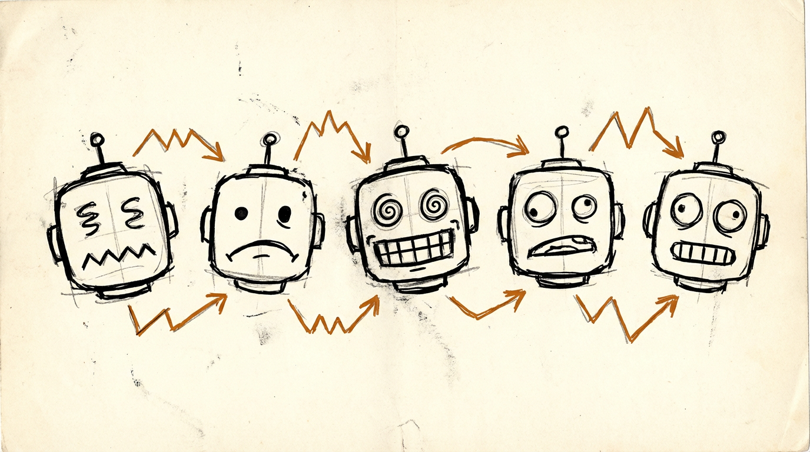

最近の投稿
Yojo（養生）パターン — AI コーダーにシャドーマスクをつける ～時間とトークンの浪費をストップ～
前回から6年ぶりの投稿です。 TL;DR 設計変更のとき、AI コーダーに旧設計・旧コードを見せない状態を作ってから実装させる。 「旧設計を無視して」と指...
Yojo（養生）パターン — AI コーダーにシャドーマスクをつける ～時間とトークンの浪費をストップ～
TL;DR 設計変更のとき、AI コーダーに旧設計・旧コードを見せない状態を作ってから実装させる。 「旧設計を無視して」と指示するのではなく、そもそも視野に入...
Claude Code Remote Control、使ったらすぐ止まる
Claude Code の Remote Control を iPhone から使っている。通勤中に進捗を確認したり、指示を出したりできるやつだ。 が、すぐ止...
AI が俺の曲を AI の曲にした
曲を作った @youtube(23k3CByjZQ4) X で「ポケモン151匹は言えるのに徳川十五代の将軍名は言えない」という話を見た。 じゃあ言えるよう...
Claude Codeの停止ボタン、何が起きて何が起きないか
Claude Codeを使っていて、こんな経験はないだろうか。 「あ、違う方向に進んでる。止めなきゃ」 そこでESCを押す。または、怖くて押せずに最後まで...
Claude Code が勝手に拡張をインストールした
何が起きたか VS Code Extension を Claude Code と一緒に開発している（この記事も）。拡張のデバッグ方法を調査していたとき、Cla...
Claude Code の設定ファイルをリポ間で共有しようとして、やめた話
Claude Code の設定ファイルをリポ間で共有しようとして、やめた話 きっかけ Claude Code を複数のリポジトリで使っていると、同じスキル...
締め切り直前のAIは、締め切り直前のエンジニアと同じ動きをする
締め切り直前のAIは、締め切り直前のエンジニアと同じ動きをする AIエージェントに「締め切り」を認識させると、品質が落ちる。 人間が締め切り前に「レビュー飛ば...

AIに「お前どうやって喋ってるの？」って聞いてみた — 納得するまで問い詰めた
ワードベクトルからRLHFまで、Geminiに根掘り葉掘り聞いた対話記録。
AIに「お前どうやって喋ってるの？」— Part 2: 画像生成から意味空間まで
画像生成のロジック、長文生成、ロングコンテキスト、RAGまで。

AIに「お前どうやって喋ってるの？」— Part 3: モデルの違いから制御システムまで
GPT・Claude・Geminiの違い、RLHFの比喩、オープンモデルの実態まで。
過去の活動
unityでGetInstanceIDを使うと便利だったケース: 簡易UIアニメーション振動メソッドの実装
前提 - Dotweenが導入済みであること これは何 - GetInstanceIDがDotweenと相性がいいという気づきの紹介 - 下の例でいうと対象...
重みづけ抽選関数
cで書いた重みづけ抽選関数。タプルを利用しています。 シンプルなので使いやすいかと。 RandomPickWithWeight.cs int Ran...
[PlayFab] データをクラウドセーブしたい時のAPIの選び方
前置き - クラウドにファイルをセーブする機能を実装するために関連するPlayFabの仕様を調べました - 2019/Dec時点の仕様です。調べてから時間が空い...
App Store Connectで、提出準備中のAPPのバージョン番号を変更する方法
- 調べないとわからなかったので記録しておく 1. AppStoreConnectにログイン 2. iOS App x.x.x 提出準備中の画面を下にスクロー...
[Unity] 正確な時間間隔で効果音を出す
メトロノームがほしい、そんな夜もあります。 - そうして心を落ち着けたいのです。 Unityで、たとえばメトロノームのように、正確な時間間隔で効果音を鳴らし...
[Unity] uGUIでStretch設定の Recttransformのサイズを変更する
Stretch設定ではないRecttransformのサイズ変更はマニュアルに書いてあります RectTransform.sizeDelta(https://d...
グーグルプレイSavedGames（＝クラウドセーブ）の実装と落とし穴
はじめに GooglePlayには無料で利用できるSaved Gamesという名前のクラウドセーブ機能が準備されています。容量の上限は3MBです。(2018.4...